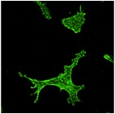

Research

01 iPSC-derived models of neurodegenerative disease
We use human induced pluripotent stem cells (iPSCs) to generate microglia, the immune cells of the brain, and study them in vitro as models of neurodegenerative disease. We are now setting up the generation of inhibitory neurons from iPSCs, to study neurodegeneration and selective resilience in human cells (see Neuronal resilience). Testing these models in vivo is a next step.
02 Zinc signaling
We study the many facets of zinc in the brain. Zinc is an essential metal ion for normal brain function, but when its balance is disrupted it becomes a neurotoxin. A recent focus of the lab is the role of zinc signaling in microglial function.
03 Neuronal resilience
In many neurodegenerative diseases some neuron populations die while others survive. A classic example is the group of neurons marked by NADPH-diaphorase activity, which are spared in several conditions. We ask what makes them resistant, aiming to find protective mechanisms that could be harnessed therapeutically.